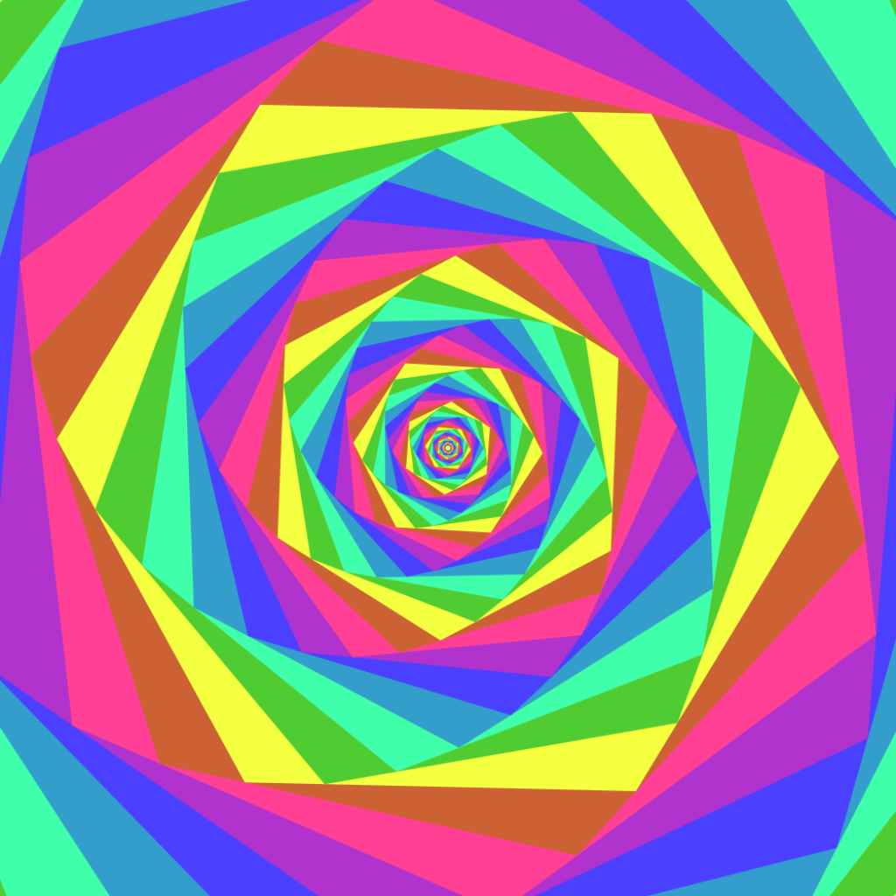

Satisfying Loops is a personal tool that automatically generates short, oddly satisfying animations (bouncing balls, infinite loops, optical illusions) with original synthesized sounds, and uploads them to the creator's own TikTok account.
The tool is used only by its owner to publish to their own account. It does not collect data from other users.